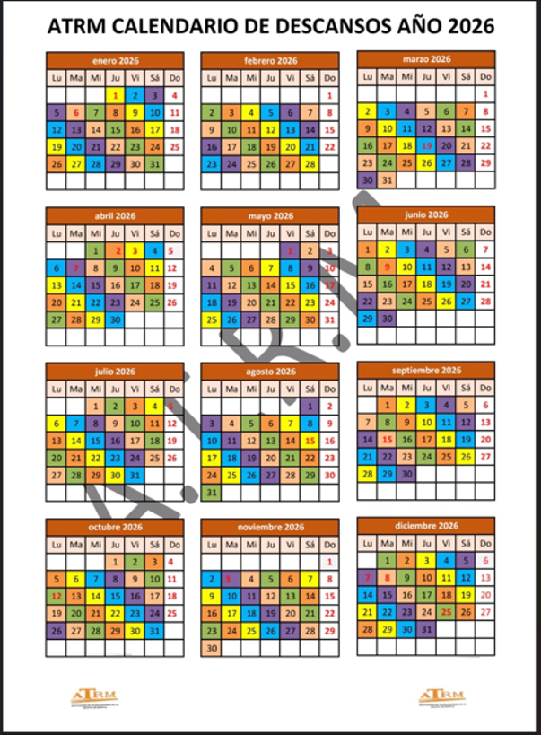

📆 Calendario Interactivo 2026
Leyenda:
■ Festivo nacional
■ Festivo local
■ Descanso turno
■ Otros descansos
📅 Información Sindical y Calendario Laboral
En esta sección encontrarás información actualizada sobre festivos, calendarios laborales, días de descanso y documentación relevante para los trabajadores del sector de limpieza pública viaria en la Región de Murcia.
🗓️ Calendario Laboral 2026 - Región de Murcia
📋 Calendario oficial aprobado para 2026
Este calendario incluye todos los días festivos de ámbito nacional y los días inhábiles específicos de la localidad de Murcia, según el BORM y resoluciones oficiales.
Este calendario incluye todos los días festivos de ámbito nacional y los días inhábiles específicos de la localidad de Murcia, según el BORM y resoluciones oficiales.
🇪🇸 Festivos de Ámbito Nacional y Regional
| Nº | Día Semana | Día | Mes | Festividad | Tipo |
|---|---|---|---|---|---|
| 1 | Jueves | 1 | Enero | Año Nuevo | Nacional |
| 2 | Martes | 6 | Enero | Epifanía del Señor | Nacional |
| 3 | Jueves | 19 | Marzo | San José | Nacional |
| 4 | Jueves | 2 | Abril | Jueves Santo | Nacional |
| 5 | Viernes | 3 | Abril | Viernes Santo | Nacional |
| 6 | Viernes | 1 | Mayo | Fiesta del Trabajo | Nacional |
| 7 | Martes | 9 | Junio | Día de la Región de Murcia | Regional |
| 8 | Sábado | 15 | Agosto | Asunción de la Virgen | Nacional |
| 9 | Lunes | 12 | Octubre | Fiesta Nacional de España | Nacional |
| 10 | Lunes | 7 | Diciembre | Día de la Constitución | Nacional |
| 11 | Martes | 8 | Diciembre | Inmaculada Concepción | Nacional |
| 12 | Viernes | 25 | Diciembre | Natividad del Señor | Nacional |
🏛️ Días Inhábiles en la Localidad de Murcia
| Nº | Día Semana | Día | Mes | Festividad | Tipo |
|---|---|---|---|---|---|
| 13 | Martes | 7 | Abril | Bando de la Huerta | Local Murcia |
| 14 | Martes | 15 | Septiembre | Romería de Fuensanta | Local Murcia |
| 15 | Martes | 3 | Noviembre | San Martín de Porres | Local Murcia |
📅 Calendario de Descansos ATRM Año 2026
🏡 Calendario de libranzas y descansos
Planifica tus días libres con este calendario visual que incluye festivos nacionales, locales y días de descanso por turnos.
Planifica tus días libres con este calendario visual que incluye festivos nacionales, locales y días de descanso por turnos.
📆 Vista del Calendario de Descansos
Calendario completo con código de colores para identificar fácilmente los diferentes tipos de días
{kind=link}
Leyenda del calendario:
🔴 Rojo: Festivos nacionales | 🟡 Amarillo: Festivos locales
🔵 Azul: Días de descanso turno | 🟢 Verde: Otros descansos
Fuente: ATRM - Planificación de turnos y descansos 2026
🔴 Rojo: Festivos nacionales | 🟡 Amarillo: Festivos locales
🔵 Azul: Días de descanso turno | 🟢 Verde: Otros descansos
Fuente: ATRM - Planificación de turnos y descansos 2026
📊 Descargas Disponibles
📋 Información Adicional
Esta sección se irá actualizando con:
- 📄 Convenios colectivos actualizados
- 📊 Tablas salariales por año
- 📅 Calendarios laborales de otros municipios de la región
- 📢 Comunicados y resoluciones oficiales
- 🏛️ Normativas y cambios legislativos
- 🔄 Planificaciones de turnos y rotaciones
💡 ¿Tienes dudas sobre algún festivo, descanso o normativa?
Contacta con ATRM en el 968 626 511 o utiliza el asistente IA del convenio en la página principal.
← Volver al Inicio
Ver Trámites
Contacta con ATRM en el 968 626 511 o utiliza el asistente IA del convenio en la página principal.